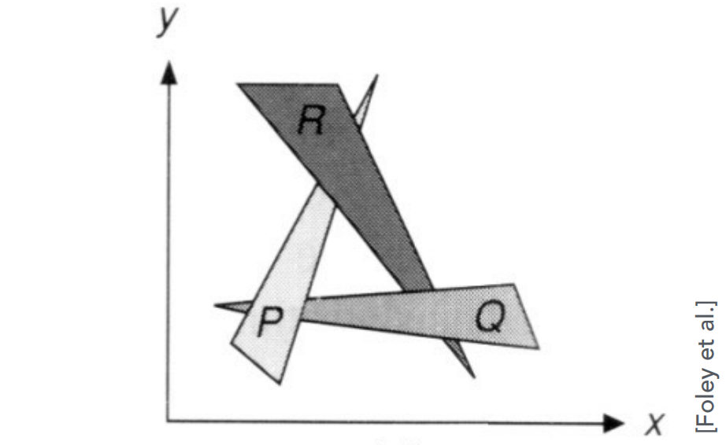
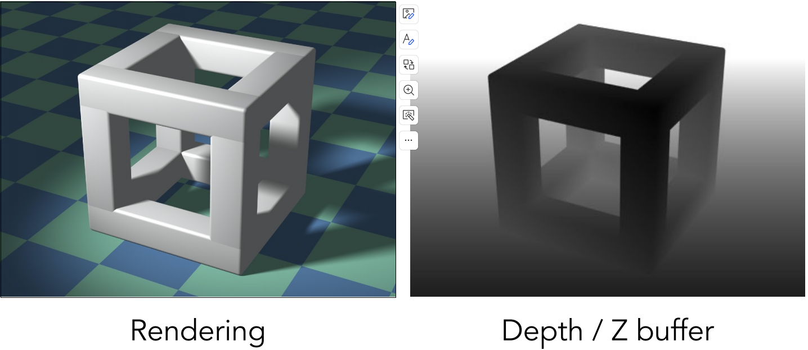
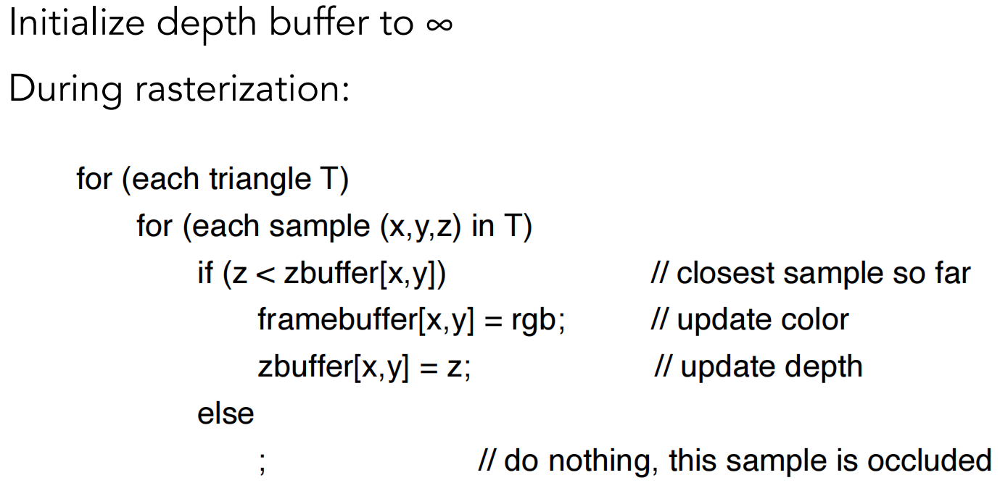
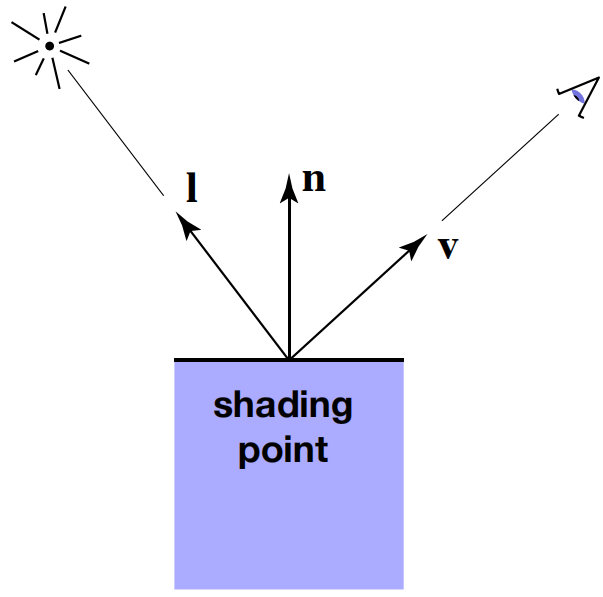
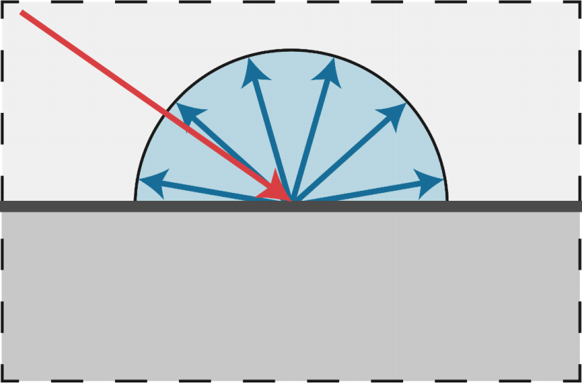
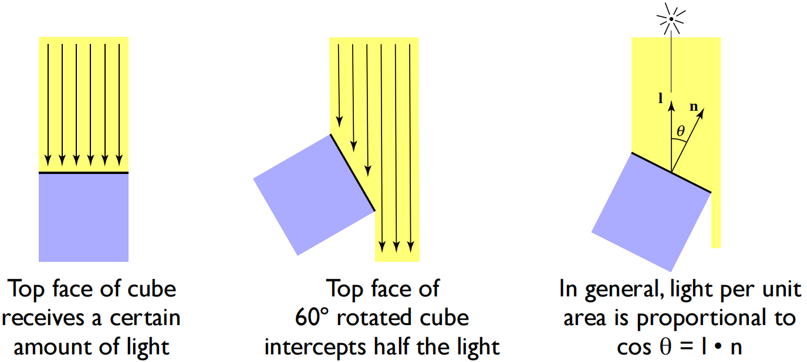
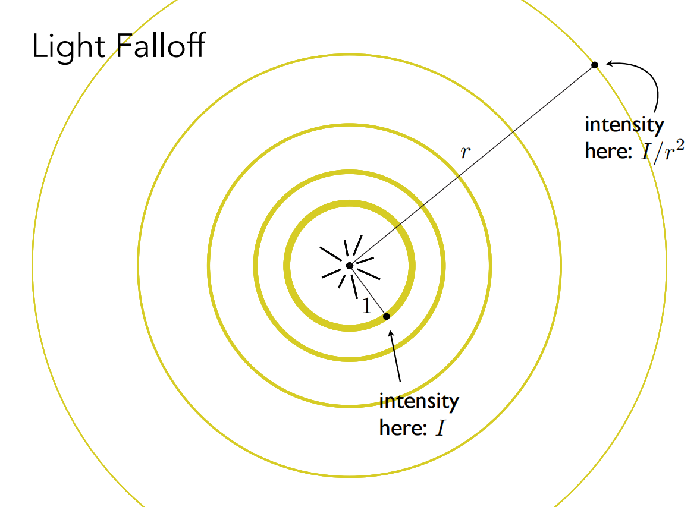
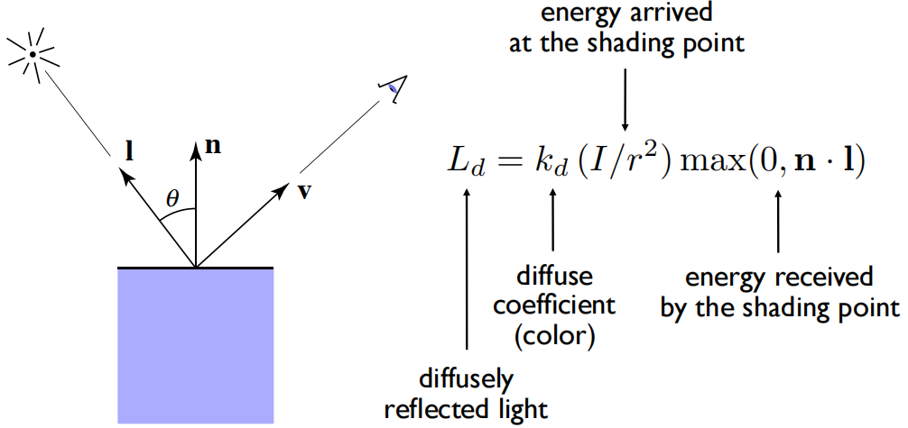
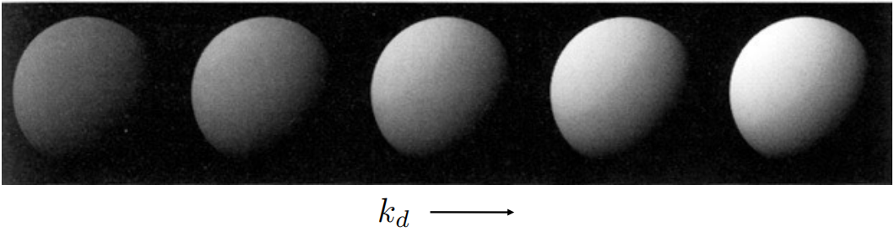

Painter’s Algorithm（画家算法）
上节课我们学习了如何光栅化一个三角形，但是当画面中有多个三角形的时候，该如何去光栅化所有的图像？一个办法就是像油画家一样，先画远处的内容，再画稍近一点的内容，也就是按照图像本身在画面中的深度由远及近的进行光栅化。
很直观的方式就是可以对所有的物体进行深度的排序（O（nlogn）），但是这样存在不可解决的排序顺序，如下图所示：
他们在深度上存在一个互相遮挡的关系，就无法对他们进行深度的排序，画家算法在这里也就失效了。
Z-Buffer（深度缓存depth buffer）
图形学实际上采用的是Z-Buffer的方法，也就是对于每一个像素去存储离我们最近的深度也就是最浅的深度z-value的信息。
对于实际完成，会渲染最终的成品，也就是预期的效果；在生成这个结果的同时，也会生成另外一个图像，这个图像只存看到的几何物体最浅的深度的信息，这个图就叫做depth buffer（z-buffer）。存储最终结果的叫做frame buffer，利用深度缓存的想法来维护遮挡信息。
这里重要的一点是，现在我们用z来表示一点到摄像机的距离，且这个z永远是正的，也就是说z的数值越大离我们越远，数值越小离我们越近。这里和前面学习的变换当中的概念不同（变换当中，摄像机在原点朝着-z方向，因此距离越近，数字越大，且z为负的）。
左侧是渲染的结果，右侧是维护遮挡信息的深度图。可以看到，离我们越远，颜色也就越浅，离我们越近，颜色也就越深。
上图就是要实现的算法了，首先将深度缓存的所有像素一开始记录的深度初始化为无限大，即表示无限远。然后在每一个三角形进行光栅化的过程中，对于任意一个三角形的任意一个像素，如果现在要画的深度小于深度缓存记录好的深度，就更新深度缓存的值为更小的，并且把这个结果存到要渲染的frame-buffer里面去，否则什么都不做。
时间复杂度为O（n），并且不会因为画三角形的顺序不同而产生不同结果（假设在同一像素上不同三角形不会有相同深度的值，因为用浮点型记录深度很难有相同值的存在）。
在之前提到的反走样技术MSAA中，考虑到会在一个像素内设置多个采样点，因此在结合这样的技术的时候，对于不同的采样点，也要做相应的深度缓存。
Shading（着色）
对不同物体应用不同的材质。
A Simple Shading Model（Blinn-Phong Reflectance Model）
在了解这个模型之前，我们可以先了解一下着色要考虑到的三个内容：高光、漫反射和环境光。高光指的是光源照射到一个相对来说较为光滑的平面，光线被反射到镜面反射附近位置产生的高亮，漫反射是指光线找到类似于墙壁这种比较粗糙的面上产生的各个方向的反射；而环境光是指由于各个面上都会发生反射，最终使得即使在光源无法照到的位置也能被看到，此处就是环境光。
接下来看一些定义：
我们考虑光照首先是在任何一个点上去考虑，也就是在一个shading point上去考虑它的着色结果是什么。那么对于这个point所属的一个物体表面上，我们认为在一个局部的一个非常小的范围内，这个表面永远是一个平面。那么在这个平面上，我们可以定义平面的法线向量n，观测方向为shading point 到观测点的方向，也就是向量v，从point看向光源的方向叫做光源方向，记作向量l。且这三个向量都被记为单位向量，长度为1。其次，对于shading point本身的一些属性，要定义一下和物体表面相关的信息。例如它是什么颜色，它有多么亮等等（color，shininess…）。
补充一点是，我们考虑的shading point是在局部的，也就是不考虑是否在阴影内等和其他物体产生联系的情况。
diffusion
首先考虑漫反射的情况，当光照到物体表面的某一个点时，会被均匀的反射到各个不同的方向上去。
并且对于光线的不同入射角度，光的强度也会发生变化。总的来说，一个漫反射的部分单位面积会接收到多少光和光照方向与法线方向形成夹角的余弦值成正比。
假设光的能量来自于一个点光源，这个点光源无时无刻往四周辐射出能量。我们认为在任何一个时刻，这个点光源往四面八方辐射的能量一定在一个球壳上，根据能量守恒定律，假设在传播过程中没有任何损失，那么离中心近和离中心远的球壳上的能量是相同的，所以在一开始球壳上每个点的能量很多，但是随着传播，球壳表面积越大，某一点处的能量会越来越少。假设这个球壳和点光源的距离为1的时候，光的强度为I（可能并不合理），当传播到距离为r的时候，球壳上一个点的强度为I/r^2。也就是说，一点处接受到来自点光源的能量是和传播距离的平方成反比的。
根据上面得到的两个结论，我们现在知道有多少的光真正传播的着色点附近，又知道有多少的光会被真正的吸收，结合在一起我们就可以知道diffuse的表示方法了。假设有一个点光源距离shading point 有一定的距离（可以算出来，用r表示），知道它的单位距离上的光的强度是I，根据余弦知道有多少光会被接受。这里在余弦值和0之间取最大值，是针对余弦值为负，即光线从shading point的下方而来，这里没有什么意义，所以认为为0。而对于这个shading point有颜色来说，就是这个点会吸收一部分颜色，当它反射的时候它不反射这个颜色，那么对于不同的点有不同的吸收率，那么就会对于不同的波长产生不同的颜色。在这里可以用一个系数kd来定义多少能量被吸收，1表示这个点完全不吸收，进来多少反射多少，如果是0，意味着这个表面是黑的，所有能量都被吸收。如果表示成一个三通道的颜色rgb的向量，那么就可以定义当前shading point上的颜色了。
可以看到漫反射的结果和观察方向v没有任何关系，从计算的式子也可以发现这一点。这里也是说明漫反射往四面八方的反射是一样的，从任何角度观察会得到相同的结果。
首先观察一个石膏球，我们会发现点光源在左上角进行照射，因为左上角更白的部分会接受到更多的能量，即这里的表面法线和光照方向一致，随着角度越大，余弦值越来越小，体现出的就是石膏球的颜色越来越黑，接收的能量越来越少。下图中的kd对于不同的石膏球从左到右逐渐增加，就表现出不同石膏球整体上接收的的能量，值越大吸收的也就越少，反射的越多观察的颜色越亮，也就是显得更白。另外，由于是漫反射，这里从任何一个角度看都会是相同的结果。
